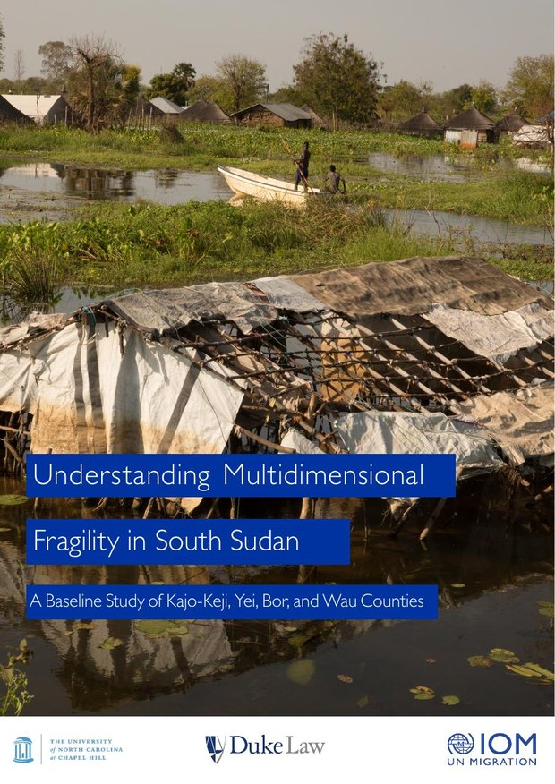

Olga Aymerich (IOM), Mara R. Revkin (Duke University), and Samuel Akau (University of North Carolina)
A Baseline Study of Kajo-Keji, Yei, Bor, and Wau Counties. International Organization for Migration and Duke University (November 2023)
The pilot study that introduced the fragility measure, based on household survey data from four South Sudanese counties: Kajo-Keji, Yei, Bor, and Wau. Chapters were researched and drafted with a team of Duke Law students — Robert Cerise, Yechan Choi, Maia Foster, and Steven Gaston — with methodological and data analysis contributions from Don Hopkins and Surabhi Trivedi at Duke Law School.
Back to Policy & NGO Reports.